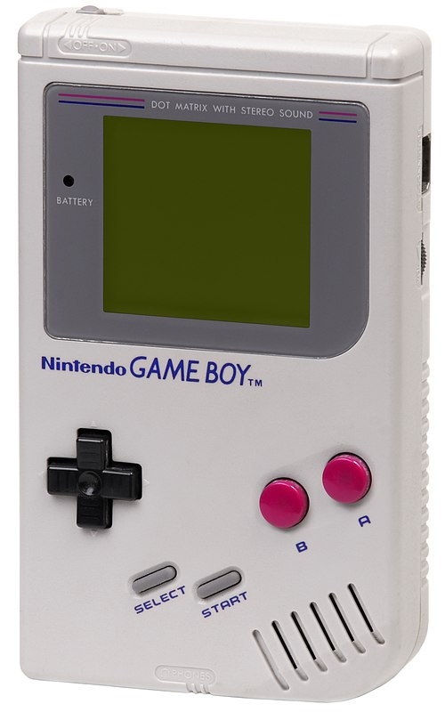
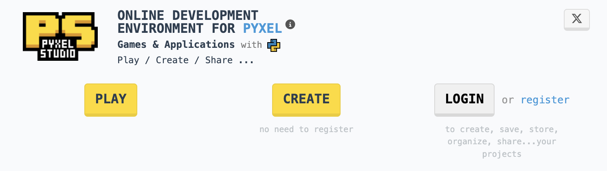
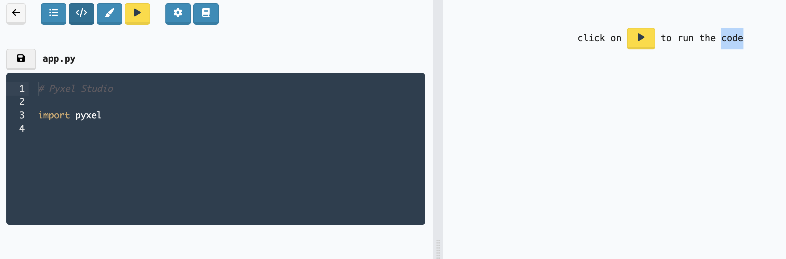
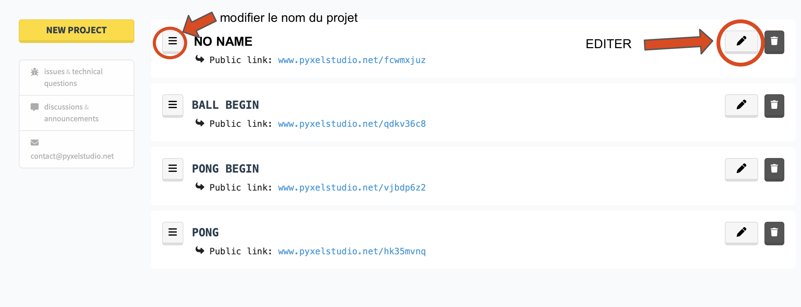
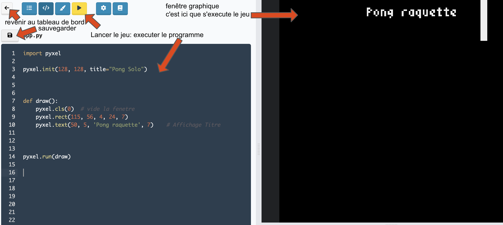
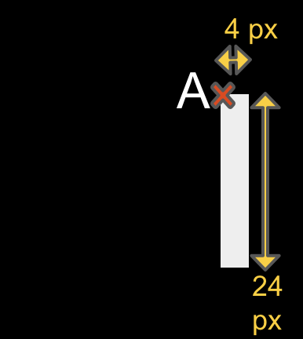
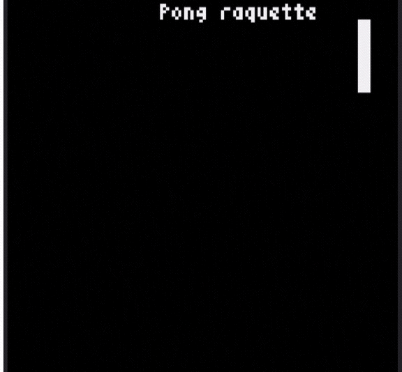

pyxelstudio les bases
Pyxel studio
Le site pyxelstudio.net permet de créer un jeu de type retro-gaming, en python. Il s’agit de jeux que l’on trouvait sur console 8 bits (16 couleurs, 4 pistes audio utilisant 64 sons différents).

console Gameboy, Nitendo, 1990
Le projet est soutenu activement, on peut consulter les démos et les télécharger depuis la page github.com/kitao/pyxel.

Pour créer notre premier jeu, nous allons utiliser l’editeur en ligne pyxelstudio.net.
Il est recommandé de créer un compte afin de retrouvez tous vos projets dans votre espace personnel. Cliquer alors sur register (en haut à droite) et renseigner vos identifiants.

Le jeu Pong SOLO
Dans cette première partie, nous allons nous familiariser avec l’environnement de developpement et la programmation de type evenementielle, en temps réel. Dans ce type de programmation, il faudra afficher et mettre à jour l’image en fonction des actions du joueur, et lire régulièrement les états des touches du clavier pour detecter les appuis par le joueur.
Programmons ainsi un grand classique des jeux d’arcade: PONG
Dans la variante proposée ici, le jeu se jouera en SOLO, le but étant de renvoyer la balle vers le bord gauche de l’écran.
Dessiner la fenêtre graphique et placer un objet
Commencer par créer un nouveau projet (new project).
Cela devrait ouvrir une nouvelle fenêtre (edition).

Lorsque vous reviendrez au tableau de bord (flèche en haut à gauche), modifiez le nom de votre projet.
Remplacer NO NAME par un nom plus evocateur, par exemple Pong raquette.
Depuis le tableau de bord, pour programmer le jeu, cliquer sur le bouton edition (le petit stylo):

La fenêtre d’edition comprend l’editeur à gauche, où l’on peut rediger le script en python, et la rendu visuel du jeu à droite. Celui-ci s’execute lorsque l’on appuie sur le bouton jaune, play:

Parmi les autres commandes de la fenêtre, repérer celle qui permet de sauvegarder et celle qui permet de revenir au tableau de bord.
Le programme suivant va dessiner une raquette (un rectangle blanc vertical) dans une fenêtre graphique de dimension 124 x 124 pixels.
Les programmes python pour Pyxel Studio ont toujours à peu près la même structure:
- la première ligne contient les extensions à ajouter au langage python. Il faudra ajouter au minimum le module pyxel pour notre programme.
- l’instruction
pyxel.init(128, 128, title="...")va créer une fenêtre graphique carrée de côtés 128 pixels. Ne pas modifier ces dimensions. - On definit une ou plusieurs fonctions pour dessiner, ou calculer de nouvelles coordonnées pour les objets. Ici, nous choisissons d’appeler cette fonction
drawpour:- effacer l’image:
pyxel.cls(0) - dessiner le rectangle blanc:
pyxel.rect(115, 56, 4, 24, 7) - écrire dans la fenêtre graphique:
pyxel.text(50, 5, 'Pong raquette', 7)
- effacer l’image:
- La dernière ligne,
pyxel.run(draw)va executer en boucle l’appel à la fonctiondraw, qui est citée en paramètre. Cet appel est réalisé 30 fois par seconde. C’est ce qui donne l’impression de dessin animé lorsque l’on modifie la position d’un objet.
Pour dessiner un rectangle de 4 pixels en largeur sur 24 en hauteur, il faudra utiliser la fonction pixel.rect.

rectangle de dimension 4px x 24 px
Pour positionner le rectangle à un endroit précis de la fenêtre graphique, ce sont les coordonnées (x,y) du coin supérieur gauche (le point A sur le schéma) qu’il faut renseigner.
Le repère (x,y) de la fenêtre graphique a pour origine (0,0) le coin supérieur gauche. L’axe croissant des x est dirigé vers la droite, et celui des y vers le bas.
Ainsi, pour positionner le rectangle de dimension 4 x 24 à la position (115,56), la fonction s’écrit pyxel.rect(115, 56, 4, 24, 7). La dernière valeur, le 7 correspond à la couleur BLANC.

position du coin superieur gauche du rectangle en (115,56)
Contrôler le deplacement d’un objet
On veut deplacer l’objet à l’aide des touches du clavier UP et DOWN (flèches vers le HAUT/BAS):

contrôle de la raquette du jeu PONG
Il faudra appliquer les modifications suivantes:
- placer la coordonnée $y_A$ du rectangle dans une variable. Appelons celle-ci
r1_ypar exemple.
La valeur de cette variable sera déclarée au debut du programme, après la première ligne. A cette étape, le script du programme est alors:
Notez que pour l’instant, la raquette reste fixe, et qu’elle n’est pas contrôlable.
Pour lire les touches du clavier, il faut utiliser la fonction pyxel.btn, et préciser en paramètre la touche que l’on veut observer. Par exemple, pour lire l’état de la touche UP, ce sera pyxel.btn(pyxel.KEY_UP)
Cette fonction retourne un booléen (True/False), que l’on va placer dans une instruction conditionnelle:
Comment traduire en python: déplacer vers le haut?
Il faudra modifier la valeur de la variable r1_y… Pour déplacer la raquette de 2 pixels vers le haut, choisir la bonne proposition parmi les 2 suivantes:
r1_y = r1_y + 2r1_y = r1_y - 2
Ou placer cette instruction?
Pour structurer au mieux notre programme, nous placerons les instructions de lecture du clavier et de modification des coordonnées dans une nouvelle fonction, que l’on appelera r1_move
La première ligne de cette fonction doit préciser que l’on autorise la modification de la variable r1_y, alors que cette variable a été déclarée en dehors de la fonction. Il faut placer pour cela l’instruction global r1_y.
A ce stade, le programme devient alors:
Notez qu’à la dernière ligne, on a ajouté la fonction r1_move comme paramètre de pyxel.run. Il y a maintenant 2 fonctions à executer en continu, 30 fois par seconde pour générer le jeu en temps réel.
Que reste t-il à faire?
- Si vous executez votre programme, vous voyez votre raquette disparaitre par le bord supérieur de la fenêtre. Il faudra rajouter une condition pour modifier
r1_ysir1_y >0. Sinon ne rien faire. - Et si l’on veut faire descendre cette raquette? Utiliser alors
if pyxel.btn(pyxel.KEY_DOWN):et programmer le deplacement vers le bas. Ici aussi, ajouter une condition surr1_ypour que la raquette ne disparaisse pas par le bord inférieur…
Enfin, lorsque tout fonctionne, vous allez vous interesser au programme de la balle rebondissante. Il s’agit alors d’un nouveau projet: Suite
Liens
- site de François Laustriat
- La liste des fonctions de contrôle des touches du clavier: pyxelstudio le pdf resumé